Bunúsacha Nextcloud Talk
Ligeann Nextcloud Talk duit comhrá a dhéanamh agus glaonna físe a bheith agat ar do fhreastalaí féin.
Tarlaíonn comhráite agus glaonna i gcomhráite. Is féidir leat aon líon comhrá a chruthú. Tá dhá chineál comhrá ann:
Comhrá duine le duine. Seo áit a mbíonn comhrá príobháideach nó glaoigh agat le húsáideoir Talk eile. Ní féidir leat daoine eile a chur leis an gcomhrá seo nó é a roinnt le nasc. Tosaíonn tú comhrá díreach duine le duine trí úsáideoir eile a chuardach sa bharra cuardaigh agus ansin cliceáil ar a n-ainm.
Comhráite grúpa. Seachas an duine a chruthaigh an comhrá, is féidir le líon ar bith daoine a bheith i gcomhrá grúpa. Is féidir comhrá grúpa a roinnt go poiblí le nasc, ionas gur féidir le haoi-úsáideoirí seachtracha páirt a ghlacadh i nglao. Is féidir é a liostú freisin, ionas gur féidir le daoine eile ar do fhreastalaí Nextcloud páirt a ghlacadh sa chomhrá.
Comhrá a chruthú
Is féidir leat comhrá díreach, duine le duine a chruthú trí ainm úsáideora, grúpa nó foirne a chuardach agus cliceáil air. I gcás úsáideoir amháin, cruthaítear comhrá láithreach agus is féidir leat do chomhrá a thosú. Le haghaidh grúpa nó ciorcal is féidir leat ainm agus socruithe a roghnú sula gcruthaíonn tú an comhrá agus na rannpháirtithe a chur leis.
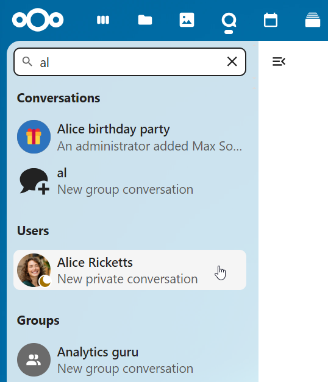{kind=link}
Más mian leat comhrá grúpa saincheaptha a chruthú, cliceáil ar an gcnaipe in aice leis an réimse cuardaigh agus an cnaipe scagairí agus ansin ar Cruthaigh comhrá nua.

Is féidir leat ansin ainm a phiocadh don chomhrá, cur síos a dhéanamh, agus avatar a shocrú dó (le grianghraf uaslódáilte nó emoji), agus roghnú ar cheart don chomhrá a bheith oscailte d’úsáideoirí seachtracha agus más féidir le húsáideoirí eile ar an bhfreastalaí a fheiceáil agus páirt a ghlacadh sa chomhrá.

Sa dara céim, gheobhaidh tú rannpháirtithe a chur leis agus cruthú an chomhrá a thabhairt chun críche.
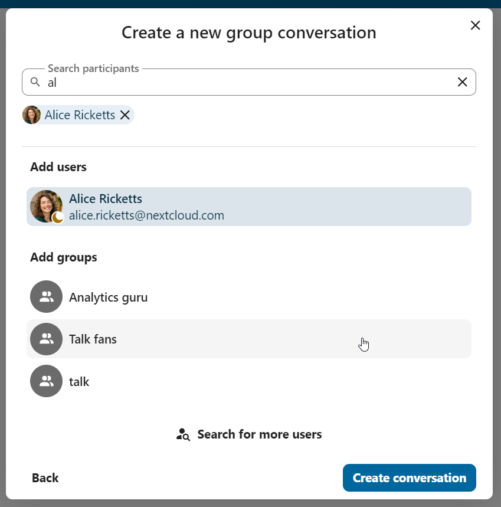{kind=link}
Tar éis deimhnithe atreorófar thú chuig an gcomhrá nua agus is féidir leat tosú ag cumarsáid láithreach.
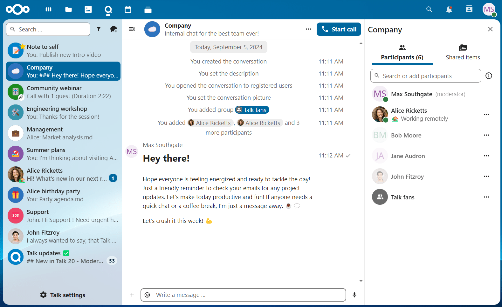{kind=link}
Féach ar gach comhrá oscailte
Is féidir leat féachaint ar na comhráite go léir is féidir leat a bheith páirteach iontu trí chliceáil ar an gcnaipe in aice leis an réimse cuardaigh agus an cnaipe scagairí agus ansin ar Glac isteach i gcomhráite oscailte.
{kind=link}
Scag do chuid comhráite
Is féidir leat do chomhráite a scagadh tríd an gcnaipe scagaire atá suite in aice leis an réimse cuardaigh. Tá dhá rogha ann le haghaidh scagadh: 1. Scag tagairtí neamhléite: Ligeann an rogha seo duit féachaint ar chomhráite grúpa le tráchtanna neamhléite nó comhráite duine ar dhuine neamhléite. 2. Scag teachtaireachtaí neamhléite: Ligeann an rogha seo duit féachaint ar gach teachtaireacht neamhléite i ngach comhrá ceangailte.
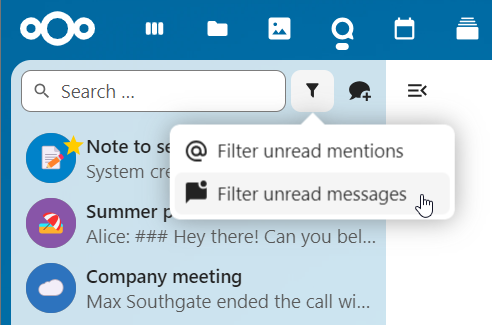{kind=link}
Is féidir leat an scagaire a ghlanadh ansin ón roghchlár scagairí.
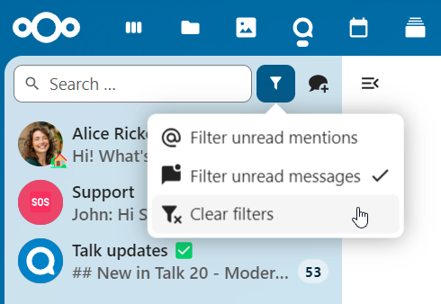{kind=link}
Comhaid a roinnt i gcomhrá
Is féidir leat comhaid a roinnt i gcomhrá ar 3 bhealach.
Gcéad dul síos, is féidir leat a tharraingt go simplí agus iad a scaoileadh ar an comhrá.
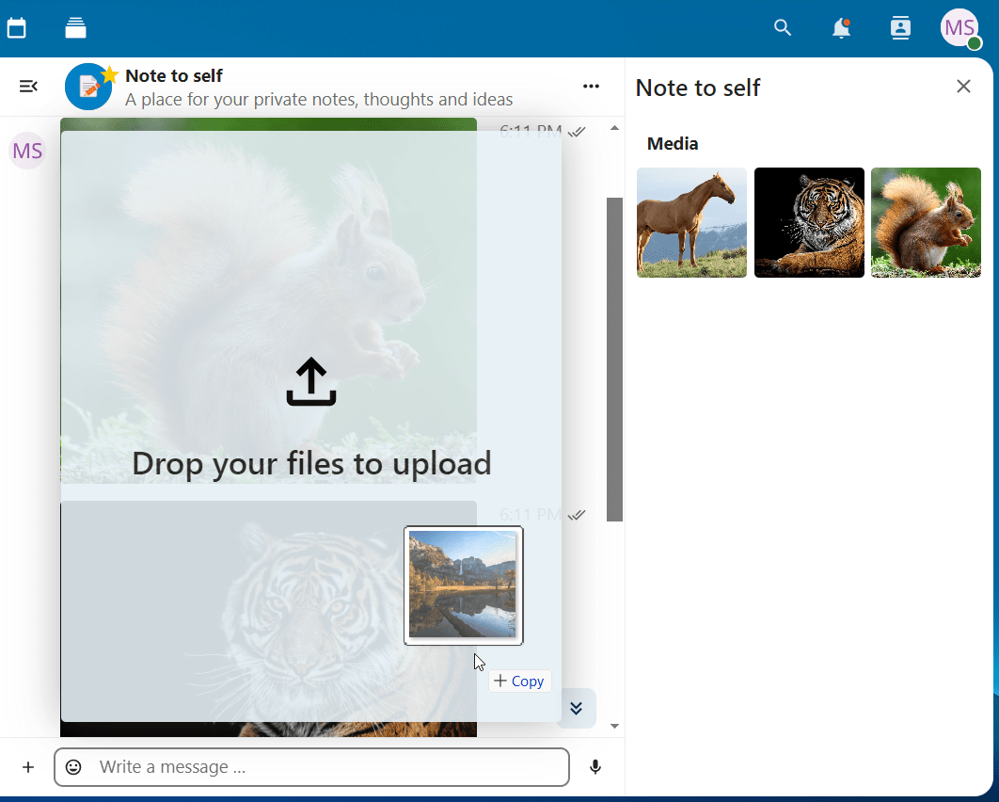{kind=link}
Ar an dara dul síos, is féidir leat comhad a roghnú ó do Nextcloud Files nó ó bhainisteoir comhad ach an páipéar beag a roghnú agus an áit ar mhaith leat an comhad a roghnú as.


Is féidir leat níos mó comhad a chur leis go dtí go bhfuil tú críochnaithe agus go gcinnfidh tú na comhaid a roinnt. Is féidir leat fotheideal téacs a chur le do chomhaid roinnte freisin, ag tabhairt cur síos gairid nó comhthéacs.
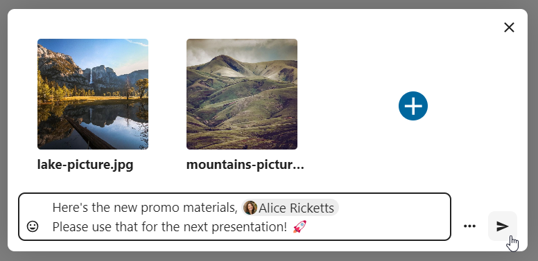{kind=link}
Beidh gach úsáideoir in ann na comhaid a chliceáil chun iad a fheiceáil, a chur in eagar nó a íoslódáil, beag beann ar chuntas úsáideora a bheith acu. Roinnfear an comhad go huathoibríoch ag úsáideoirí a bhfuil cuntas acu agus roinnfear aoi-úsáideoirí seachtracha mar nasc poiblí iad.
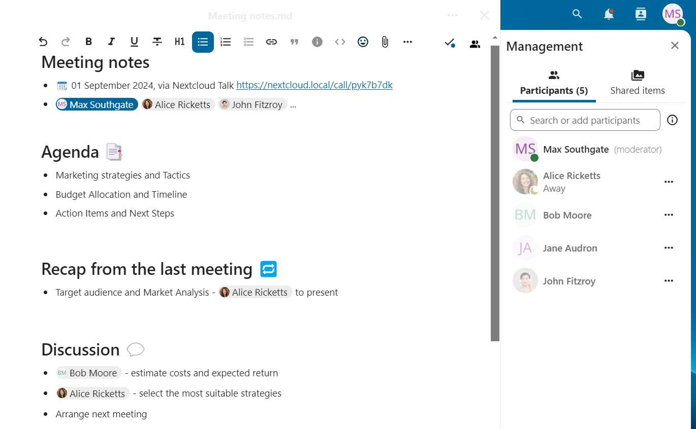{kind=link}
emoji á chur isteach
Is féidir leat emoji a chur leis ag baint úsáide as an roghnóir ar thaobh na láimhe clé den réimse ionchuir téacs.
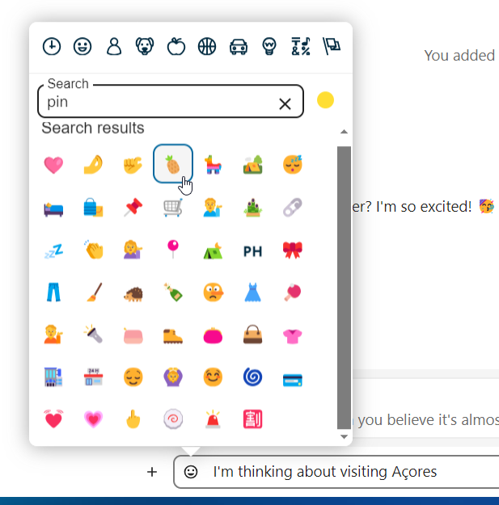{kind=link}
Teachtaireachtaí á gcur in eagar
Is féidir leat teachtaireachtaí agus fotheidil a chur in eagar chun scaireanna a chomhdú suas le 6 huaire tar éis iad a sheoladh.
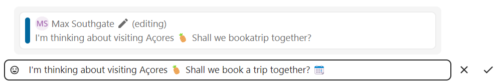{kind=link}
Ag baint úsáide as Markdown
Is féidir leat do theachtaireachtaí a fheabhsú le tacaíocht chomhréire marcála. Féach an liosta le haghaidh úsáide:
Ceannteidil agus roinnteoirí
# Heading 1
## Heading 2
### Heading 3
#### Heading 4
##### Heading 5
###### Heading 6
Heading
===
Normal text
***
Normal text
Maisiúcháin inlíne
**bold text** __bold text__
*italicized text* _italicized text_
`inline code` ``inline code``
```
.code-block {
display: pre;
}
```
Liosta
1. Ordered list
2. Ordered list
* Unordered list
- Unordered list
+ Unordered list
Sleachta
> blockquote
second line of blockquote
Tascliostaí
- [ ] task to be done
- [x] completed task
Táblaí
Column A | Column B
-- | --
Data A | Data B
Meabhrúchán á shocrú ar theachtaireachtaí
Is féidir leat meabhrúcháin a shocrú ar theachtaireachtaí ar leith. Má tá teachtaireacht thábhachtach ar mhaith leat a chur ar an eolas faoi níos déanaí, níl le déanamh ach ainliú uirthi agus cliceáil ar an deilbhín meabhrúcháin.
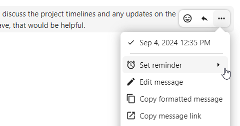{kind=link}
Sa bhfo-roghchlár, is féidir leat am cuí a roghnú chun fógra a fháil níos déanaí.
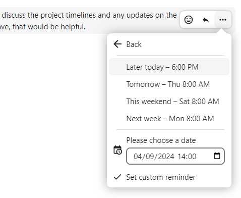{kind=link}
Ag freagairt teachtaireachtaí agus eile
Is féidir leat freagra a thabhairt ar theachtaireacht leis an tsaighead a thaispeánfar nuair a aistríonn tú teachtaireacht.
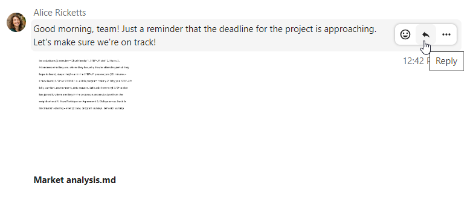{kind=link}
Sa roghchlár ... is féidir leat freagra a thabhairt go príobháideach freisin. Osclóidh sé seo comhrá duine le duine.

Anseo is féidir leat nasc díreach a chruthú leis an teachtaireacht nó é a mharcáil gan léamh ionas go scrollóidh tú ar ais ansin an chéad uair eile a rachaidh tú isteach sa chomhrá. Nuair is comhad é, is féidir leat an comhad a fheiceáil i Comhaid.
Teachtaireachtaí ciúine
Mura bhfuil tú ag iarraidh cur isteach ar aon duine i lár na hoíche, tá modh tostach ann chun comhrá a dhéanamh. Cé go bhfuil sé cumasaithe, ní bhfaighidh rannpháirtithe eile fógraí ó do theachtaireachtaí.
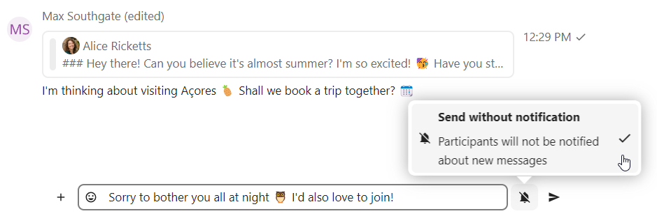{kind=link}
Comhrá a bhainistiú
Is modhnóir tú i gcónaí i do chomhrá nua. I liosta na rannpháirtithe is féidir leat rannpháirtithe eile a chur chun cinn go modhnóirí trí úsáid a bhaint as an roghchlár ... ar thaobh na láimhe deise dá n-ainm úsáideora, ceadanna saincheaptha a shannadh dóibh nó iad a bhaint den chomhrá.
Cuirfidh athrú ceadanna úsáideora a chuaigh isteach i gcomhrá poiblí leis an gcomhrá go buan iad freisin.
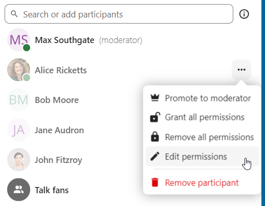{kind=link}
Is féidir le modhnóirí an comhrá a chumrú. Roghnaigh Socruithe comhrá ón roghchlár … den chomhrá ar an mbarr chun rochtain a fháil ar na socruithe.

Anseo is féidir leat an tuairisc a chumrú, rochtain aoi, má tá an comhrá le feiceáil ag daoine eile ar an bhfreastalaí agus níos mó.

Téann teachtaireachtaí in éag
Is féidir le modhnóir dul in éag teachtaireachta a chumrú faoi na Socruithe comhrá laistigh den rannán Modhnóireacht. Nuair a shroicheann teachtaireacht a am éaga, baintear go huathoibríoch í den chomhrá. Is iad na tréimhsí éaga atá ar fáil ná 1 uair, 8 n-uaire, 1 lá, 1 seachtain, 4 seachtaine, nó riamh (is é sin an socrú réamhshocraithe).

Ag tosú glao
Nuair a bhíonn tú i gcomhrá, is féidir leat glaoch a thosú am ar bith leis an gcnaipe Tosaigh an glaoch. Cuirfear rannpháirtithe eile ar an eolas agus is féidir leo páirt a ghlacadh sa ghlao.
{kind=link}
Má tá glao tosaithe ag duine éigin eile cheana féin, athrófar an cnaipe ina chnaipe glas Join Call.

Le linn glao, is féidir leat do mhicreafón a bhalbhú agus do fhíseán a dhíchumasú leis na cnaipí ar thaobh na láimhe deise den bharra barr, nó na haicearraí M a úsáid chun fuaim a bhalbhú agus `` V`` chun físeán a dhíchumasú. Is féidir leat an barra spáis a úsáid freisin chun balbhú a scoránú. Nuair a bhíonn balbhú ort, díbhalbhófar tú má bhrúnn tú spás ionas gur féidir leat labhairt go dtí go scaoilfidh tú an spásbharra. Mura bhfuil tú balbhaithe, balbhóidh spás brú tú go dtí go scaoilfidh tú as.
Is féidir leat do fhíseán a cheilt (úsáideach le linn comhroinnte scáileáin) leis an tsaighead bheag díreach os cionn an tsrutha físeáin. Beir leat é leis an tsaighead bheag arís.
Is féidir leat rochtain a fháil ar do shocruithe agus ceamara gréasáin, micreafón agus socruithe eile a roghnú sa roghchlár … sa bharra barr.

Ó socruithe meáin dialóg, is féidir leat athrú freisin ar an cúlra do físeáin.

Is féidir leat socruithe eile a athrú sa dialóg Labhair socruithe.

Comhroinnt scáileáin a thosú
Is féidir leat cliceáil ar an deilbhín monatóireachta ar do shruth físeáin chun do scáileán a roinnt. Ag brath ar do bhrabhsálaí, gheobhaidh tú an rogha monatóir, fuinneog feidhmchláir nó cluaisín brabhsálaí amháin a roinnt. Má tá físeán ó do cheamara ar fáil freisin, feicfidh rannpháirtithe eile é i radharc beag láithreora in aice leis an sciar scáileáin.

Amharc a athrú i nglao
Is féidir leat an t-amharc a athrú i nglao leis an deilbhín beag ceithre bhloc ar an mbarr ar dheis idir radharc bolscaireachta agus radharc greille. Taispeánfaidh an radharc greille gach duine chomh mór agus mura n-oireann na daoine ar an scáileán, beidh cnaipí le feiceáil ar chlé agus ar dheis a ligeann duit nascleanúint a dhéanamh.
{kind=link}
Taispeánann an radharc spreagtha an cainteoir mór agus cinn eile i ndiaidh a chéile thíos. Mura n-oireann na daoine ar an scáileán, beidh cnaipí le feiceáil ar chlé agus ar dheis a ligeann duit nascleanúint a dhéanamh.
{kind=link}